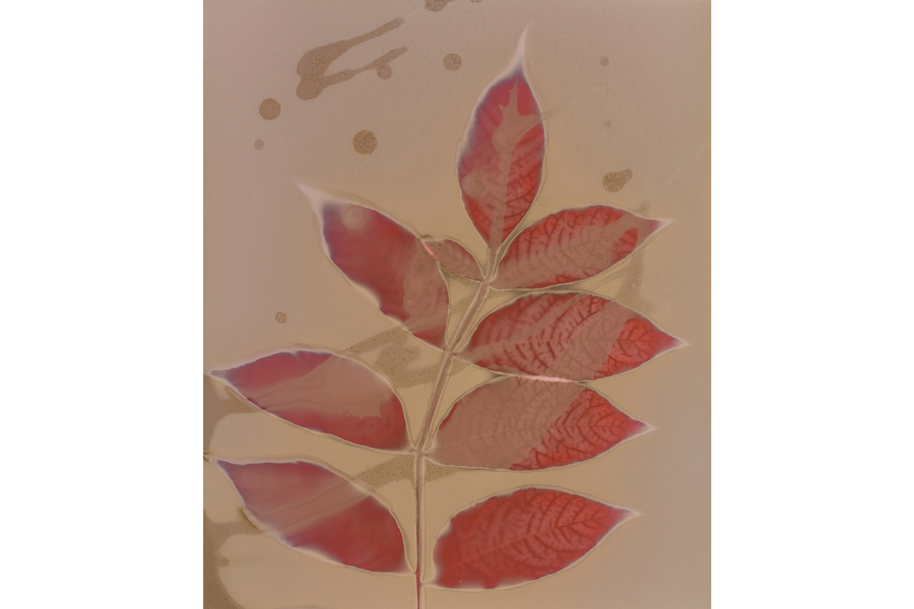
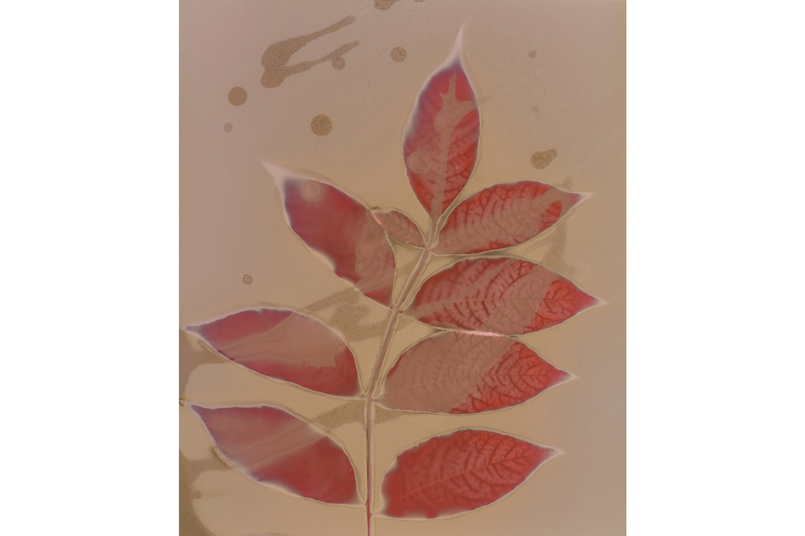

|
In her series of lumen prints, Timm places organic material on top of silver gelatin paper and exposes it to direct sunlight. During this process, the paper can develop a wide array of colors depending on a multitude of factors such as humidity, time of day, exposure time, and structure of the organic material. Although exposure time is testable and easy to manipulate, the sensitivity of the process leaves the resultant image unknowable until completed. After removing the image from sunlight, Timm scans the unfixed print, preserving its vibrant, temporary state and stores the paper itself in a light-tight box.
|


 
